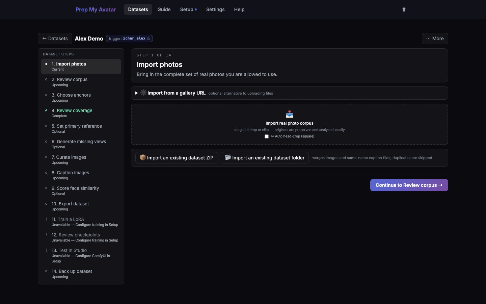

First run · 8 of 21
Step 8: Import photos
Start with real source images. The app preserves each original and makes a working copy, so later crops and decisions do not overwrite your source file.

Before you begin
For a Character dataset, gather at least five clear photos you own or have permission to use. Include different angles and framings if possible. Avoid beginning with many nearly identical selfies. Five photos are enough to test the workflow, not necessarily enough for a final LoRA.
Do this
- Open Import photos in the dataset step navigator. Its URL ends in
/import. - Drag image files into the import area, or select it and choose files from your computer.
- Leave automatic head crop off for the first import unless you specifically need face-only crops.
- Wait until processing finishes. Do not close the app while the busy message is visible.
- Check the import result. Exact duplicates are skipped; near-duplicates remain available for your review.
- Select Continue to Review photos.
For Concept or Style datasets, import representative examples of the concept or style. Concept datasets can also use the scraper, but a manual import is the simplest first test.
You are finished when
The import reports the number of files you expected, the step navigator marks Import photos — Complete, and Continue opens Review photos.